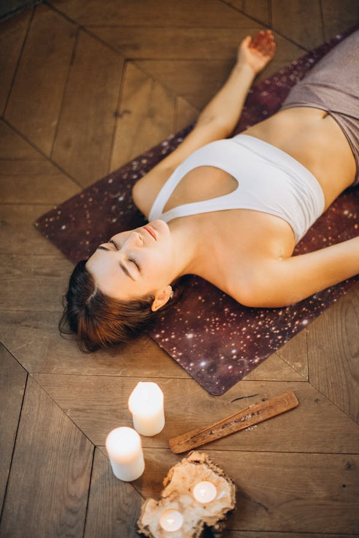

What is Yin Yoga?
The practice
A different style
Focuses on stillness and has an emphasis on longer, deeper stretching.
A deeper stretch
Stretching of the deeper connective tissues, such as ligaments, tendons, and deep fascia - the tissue that surrounds muscles
A passive practice
Yin yoga is performed sitting or lying down in a passive manner.

The principles
Find your edge
Knowing when to stop a posture helps create the essential balance between no sensation and too much sensation in the body.
Be still
Once you find your edge, you remain still. Achieve a meditative state.
Hold the posture
You'll gain the most from your yin yoga practice by holding a posture. Most practicioners start with a 1-3 minute hold time, more experienced students might hold postures from 5-10 minutes.